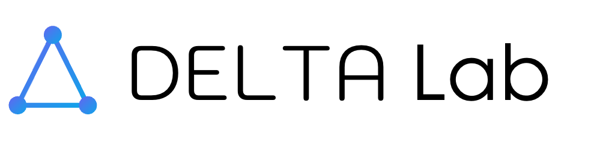

AI-Native Development Infrastructure
DELTA Lab
Shanghai Innovation Institute · 2026
Delivers business value, not just developer productivity.
Make individual developers faster. Single-task scope.
Provide intelligence. We build ON them.
The gap between tools and value was bridged by humans. We computationalize this gap.
The hard problem is context construction, not code generation.
Behavioral directives in .claude/rules/ that AI loads automatically every session.
Reusable capabilities: /start-task, /task-done, /code-review, /decompose.
Git-tracked proposals, inbox state machine, Linear as source of truth for tasks.
Intent → Demand Review → Plan → Plan Review → Execute → Code Review. Three gates before code ships.
Human guides each step. Reviews plans before implementation.
Quality gates replace human checkpoints. Fleet of parallel workers.
Every workflow improvement benefits both modes. You choose a supervision level, not a tool.
Cross-project visibility via unified task tracking and automated PR workflows.
Each task gets its own git worktree. Parallel nightrun workers, zero interference.
Daily/weekly reports aggregate progress across all projects and portfolio students.
AI confidently produces plausible but wrong output. Bugs ship to production. The more autonomous the system, the later mistakes are caught.
Humans review everything "just in case." AI capacity is wasted. The team gains autonomy on paper but not in practice.
How do you know which tasks are safe to automate and which need human oversight?
Without systematic assessment, you are guessing.
Automation Risk Impact Level per module. Quantifies reliability risk of AI-driven changes.
Bottom-up risk propagation through CLAUDE.md hierarchy. Leaf modules aggregate to root.
Match task complexity to current AI capability. Route high-risk tasks to human review.
The system evaluates its own automation safety before executing.
Each session starts from scratch. Decisions made yesterday are invisible today. The AI re-discovers what it already learned.
Team knowledge lives only in human memory. When someone is unavailable, the knowledge is gone. Unscalable.
Different AI workers get different context depending on who prompted them. Quality varies wildly across sessions.
The hard problem of AI-assisted development is context construction, not code generation.
Code generation is solved. Knowing what to build, why, and how it fits -- that is the gap.
Every AI worker starts with the full picture. No amnesia. No guessing.
Root CLAUDE.md auto-loads. Project identity, children map, data flow. Always available.
Per-module rules load when touching that module. Conventions, insights, local patterns.
Deep docs read explicitly. SPEC.md for architecture rationale. SCOPE.md for strategy.
Per-project behavioral directives. Immediate effect next session. Project scope
Cognitive patterns, auto-refined to 1500 chars max. Project scope
Cross-project review criteria. Requires human approval. Team-wide
Every code review finding is captured, tagged, and auto-retrieved when the same pattern recurs. Bug fixes trigger root-cause reflection.
This is not RLHF. It is explicit, auditable organizational learning.
Multi-agent planning. Iterative review. Gate-fix retry loops. More compute per task = more reliable output.
Plan + code review select the best approach. Failed attempts inform future decisions.
Human feedback routed to 3-tier system. The system improves through the work it enables.
Better prompts help one task.
Better structure helps every task, forever.
Current
| Metric | Now | Phase B | Phase D |
|---|---|---|---|
| PR Approval | ~50% | 80% | >95% |
| Tasks/Week | 3-5 | 10-15 | 30+ |
| Human Role | Code + Plan | Outcome Review | Hypothesis |
PM-DELTA manages its own development. Every improvement immediately improves the process that builds it.
Value from domain depth, not breadth. AI+Finance, AI+Education -- each domain compounds learning.
The system that ran 100 tasks is meaningfully better than the one that ran 10.
Internal framework guides domain selection: which industries benefit most from AI automation today.
Combine AI methods with domain expertise: finance, education, healthcare, manufacturing.
Build AI infrastructure that compounds. Shape the future of AI-native development.
Cross-institutional collaboration. Real data, real systems, real impact.
Not just model builders -- domain practitioners who wield AI as infrastructure.
AI-Native Development Infrastructure
github.com/SII-DELTA